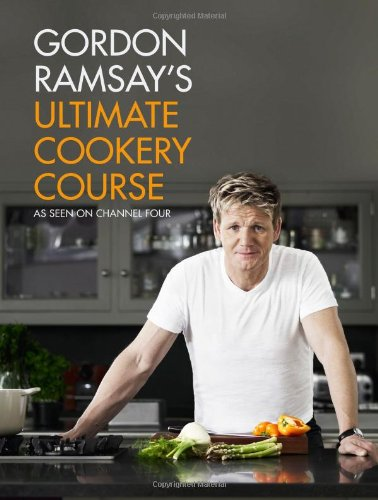

| Відьмак. Офіційна кулінарна книга | |
|---|---|
| Оцінка: ★★★★★★★★★☆ | |
| Перевіренні рецепти: 9/80 | |
|
Висновки: Книга вражає фанатів фентезі своїм стилем, пропонуючи страви, які відтворюють атмосферу світу "Відьмака". Рецепти добре продумані й різноманітні — від простих до вишуканих, що робить книгу універсальною як для новачків, так і для досвідчених кулінарів. Однак, частина страв більше підходить для тематичних подій, ніж для щоденного приготування. |
|
| Де купити: Посилання на магазин | |
| Ганнібал. Готуємо для друзів | |
|---|---|
| Оцінка: ★★★★★★★★☆☆ | |
| Перевіренні рецепти: 12/74 | |
|
Висновки: Ця книга приваблює естетикою та екстравагантними рецептами, які підходять для тих, хто хоче створити особливу атмосферу за столом. Вона надає унікальний досвід для творчих кулінарів, але деякі інгредієнти важко знайти, а процеси можуть бути складними для повсякденного використання. Це радше про кулінарне мистецтво, ніж про практичні рецепти на щодень. |
|
| Де купити: Посилання на магазин | |
| Gordon Ramsay's Ultimate Cookery Course | |
|---|---|
|  | Оцінка: ★★★★★★★☆☆☆ |
| Перевіренні рецепти: 31/125 | |
|
Висновки: Ця книга ідеально підходить для тих, хто прагне підвищити свої навички в кулінарії, завдяки доступним і різноманітним рецептам та численним практичним порадам. З приблизно 120 рецептами, які легко інтегрувати в повсякденне меню, книга спонукає готувати вдома, розвиваючи впевненість як у новачків, так і у більш досвідчених кухарів. Її сильна сторона — простота й орієнтованість на сучасні смаки та техніки. Однак, для шефів, які шукають складні виклики або гастрономічні відкриття, книга може здатися недостатньо амбітною. Також частина матеріалу перегукується з однойменним шоу, що може зменшити ефект новизни для його прихильників. Загалом, це чудовий посібник для практичного використання в повсякденній кухні, хоча для кулінарів-ентузіастів може бракувати складніших рецептів. |
|
| Де купити: Посилання на магазин | |